Real-Time Collaborative Project Management Platform
Web Technologies | Instructor: Naima Iltaf | 10 May 2026
| Field | Details |
|---|---|
| Project Title | TeamOps - Real-Time Collaborative Project Management Platform |
| Course | Web Technologies |
| Submitted By | Zainab Saeed (CMS ID: 509170), Zunairah Sarwar (CMS ID: 502506) |
| Instructor | Naima Iltaf |
| Project Type | Full-stack web application |
| Frontend | Standalone HTML, CSS, and vanilla JavaScript served through Vite |
| Backend | Node.js, Express 5, Socket.io, MongoDB, Mongoose |
| Core Domain | Team workspaces, Kanban boards, task tracking, real-time collaboration, notifications, role-based access control |
| GitHub Repository | https://github.com/zainabsaeed-cpu/Team-Ops |
TeamOps began as a real-time Kanban project management idea for the Web Technologies course and matured into a working full-stack collaboration platform. The proposal established the main academic direction: user accounts, workspaces, Kanban cards, live synchronization, activity logs, notifications, and a practical demonstration of client-server web development. The implemented system keeps that direction but reflects the final repository architecture: a standalone HTML/CSS/JavaScript frontend, an Express 5 backend, Socket.io real-time rooms, and MongoDB/Mongoose persistence.
This report documents the finished project as a submission-ready artifact. It covers the problem being solved, objectives, architecture, database design, backend and frontend implementation, real-time event flow, security controls, testing approach, and future enhancements. The report intentionally notes important changes from the original proposal, especially the shift from React/PostgreSQL planning to the final standalone frontend and MongoDB implementation.
TeamOps is a full-stack collaborative project management system designed to help teams organize work through workspaces, boards, columns, cards, comments, activity logs, notifications, and live updates. The application follows a client-server architecture. The frontend is a standalone HTML/CSS/JavaScript application, while the backend exposes a REST API using Express and persists data in MongoDB through Mongoose models. Real-time synchronization is implemented with Socket.io so that board changes, comments, activity events, notifications, and workspace presence can update connected users without requiring a page refresh.
The main objective of TeamOps is to provide a practical teamwork platform similar to a lightweight Trello/Jira-style board, but with a student-project scope that demonstrates authentication, authorization, database modeling, REST API design, real-time events, and frontend state management. The system supports email registration with OTP verification, Google sign-in, HTTP-only cookie-based JWT sessions, workspace creation, invite codes, email invite tokens, owner/admin/member/viewer roles, manual board creation, card CRUD operations, drag-and-drop movement, activity filtering, analytics, notifications, profile management, and user-specific “My Work” views.
Many student teams and small project groups manage tasks through scattered messages, spreadsheets, or informal notes. This creates problems such as unclear ownership, missing deadlines, poor visibility of progress, and delayed communication when one member changes task status. TeamOps solves this by providing a centralized workspace where team members can create boards, assign cards, track progress, comment on tasks, and receive live updates.
The project focuses on these core problems:
The objectives of TeamOps are:
TeamOps/
teamops-backend/
server.js
models/index.js
controllers/
routes/
middleware/
socket/
utils/
teamops-frontend/
index.html
styles.css
vite.config.js
package.jsonThe active frontend is teamops-frontend/. It is
intentionally implemented as a standalone HTML/JS app. The main
application logic is in index.html, and the visual design
is in styles.css. There is no active React
src/ application.
| Layer | Technology | Purpose |
|---|---|---|
| Frontend | HTML5 | App markup and view structure |
| Frontend | CSS3 | Responsive dashboard, modals, board UI, animations |
| Frontend | Vanilla JavaScript | API calls, local state, DOM rendering, drag-and-drop |
| Frontend Server | Vite | Static development server and build output |
| Backend Runtime | Node.js | JavaScript server runtime |
| Backend Framework | Express 5 | REST API routing and middleware |
| Real-Time | Socket.io | WebSocket-style bidirectional events |
| Database | MongoDB | Document database |
| ODM | Mongoose | Schemas, models, queries, validation, indexes |
| Authentication | JWT in HTTP-only cookie | Stateless signed session stored as a secure browser cookie |
| Password Security | bcryptjs | Password hashing and comparison |
| OAuth | Google Auth Library | Google ID token verification |
| Nodemailer/Resend utility layer | Verification, reset, invitation emails |
TeamOps uses a layered architecture:
Browser
|
| REST requests with browser-sent session cookie
| Socket.io connection authenticated from session cookie
v
Express API server
|
| Controllers enforce validation and business rules
v
Mongoose models and formatter helpers
|
v
MongoDB database
Socket.io rooms:
board:<boardId> board updates and activity
user:<userId> private notifications
workspace:<id> workspace presence countThe backend issues the JWT as an HTTP-only
teamops_session cookie and sends a readable
teamops_csrf cookie for CSRF protection. For protected API
requests, the browser sends the session cookie automatically and the
frontend adds an X-CSRF-Token header for unsafe
state-changing requests. The backend verifies the cookie token in
middleware/auth.js, stores req.userId, and
then controllers use that user id to check workspace membership and role
permissions. Socket.io also authenticates from the session cookie
instead of a manually supplied bearer token.
[Visitor]
|
v
[Register / Login / Google Sign-In]
|
+--> Email registration --> [Create unverified user]
| |
| v
| [Send OTP]
| |
| v
| [Verify OTP]
|
+--> Email login --------> [Check password hash]
|
+--> Google login -------> [Verify Google ID token]
|
v
[Issue JWT session cookie]
|
v
[Set CSRF cookie]
|
v
[Open workspace setup or dashboard][Authenticated user]
|
v
[Workspace setup]
|
+--> Create workspace --> [Owner role assigned]
| |
| v
| [Create board]
| |
| v
| [Default columns created]
|
+--> Join by invite code --> [Member role assigned]
|
+--> Join by email token --> [Validate token, email, expiry]
|
v
[Dashboard loads selected workspace]
|
v
[Board, members, analytics, activity][Member/Admin/Owner]
|
v
[Create or edit card]
|
+--> Assign user --------> [Create assignee notification]
|
+--> Add comment/mention -> [Create mention notification]
|
+--> Drag card ----------> [PATCH move endpoint]
|
v
[Validate role and board scope]
|
v
[Recalculate card positions]
|
v
[Save MongoDB changes]
|
v
[Create activity record]
|
v
[Emit Socket.io board event]
|
v
[Connected clients update live][Owner/Admin]
|
v
[Members / Settings / Audit views]
|
+--> Invite member -----> [Generate code or email token]
|
+--> Change role -------> [Validate role hierarchy]
|
+--> Remove member -----> [Check requester permissions]
|
+--> Update settings ---> [Save automation settings]
|
v
[Log governance activity]
|
v
[Emit workspace settings/presence updates]
|
v
[Audit log shows sensitive changes]All active Mongoose models and formatter helpers are in
teamops-backend/models/index.js.
| Model | Main Fields | Purpose |
|---|---|---|
| User | name, email, passwordHash, avatarUrl, googleId, authProvider, verified, notifyEmail, notifyPush | Stores account and profile data |
| VerificationToken | userId, token, expiresAt | OTP verification and reset code storage |
| WorkspaceInviteToken | token, workspaceId, email, role, expiresAt, used | Secure email invite joining |
| Workspace | name, description, techStack, owner, inviteCode, members | Top-level team container |
| Board | workspaceId, name, color | Project board inside a workspace |
| Column | workspace, board, title, position | Kanban workflow stage |
| Card | column, title, description, priority, assignee, dueDate, position | Task item |
| Comment | board, card, user, taggedCards, taggedMembers, content | Board and card discussions |
| Activity | workspace, board, user, userId, workspaceId, boardId, action | Timeline/audit events |
| Notification | user, message, is_read, is_important | User inbox alerts |
Workspace.members.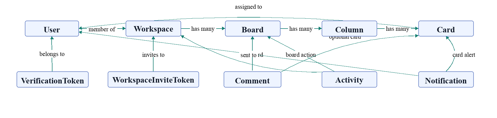
MongoDB is suitable because the app has nested, document-friendly entities such as workspace members and fast-changing collaborative board data. Mongoose schemas still provide structure, indexes, validation, and model-level consistency. The project uses references for relationships that need independent queries, such as cards, columns, comments, users, boards, and activities.
The backend entry point is teamops-backend/server.js.
It:
/api/health endpoint.| Route Prefix | Responsibility |
|---|---|
/api/auth |
Register, login, verify, resend verification, Google login, forgot/reset password, current user |
/api/workspaces |
Workspace CRUD, members, roles, invite code joining, email invite joining, workspace boards |
/api/boards |
Board data, analytics, comments, columns, cards, movement |
/api/activities |
Activity timeline and audit views |
/api/notifications |
Notification inbox, unread count, mark read, mark all read, important flag |
/api/user |
Profile, password change, assigned cards |
For email registration:
VerificationToken.For login:
For Google login:
TeamOps uses workspace roles:
| Role | Level | Typical Permissions |
|---|---|---|
| owner | 3 | Full workspace control, delete workspace, manage all members |
| admin | 2 | Manage boards, columns, members, settings, invites |
| member | 1 | Create/edit/move cards, comment, collaborate |
| viewer | 0 | Read board data and comments, limited interaction |
The backend uses both route middleware and controller-level checks.
The requireRole middleware resolves the workspace from
route params or related board/column/card ids, then validates that the
current user has one of the required roles. Controllers also use helper
functions such as checkWorkspaceAccess and
resolveBoardAccess to enforce role hierarchy before
sensitive operations.
Socket.io is initialized in server.js and handled in
socket/index.js. During connection, the server parses the
session cookie from the socket handshake headers and verifies the JWT.
If valid, it joins a private user:<userId> room.
The frontend joins board and workspace rooms:
board:join or join:board to subscribe to
board updates.workspace:join or join:workspace to
subscribe to presence count.join:user for private notification delivery.Important emitted events include:
| Event | Use |
|---|---|
card:created |
A new card was added |
card:updated |
Card details changed |
card:deleted |
Card removed |
card:moved |
Card moved to another column/position |
column:created |
Board column added |
column:deleted |
Board column removed |
card:commented |
Card comment created |
comment:deleted |
Card comment deleted |
board:commented |
Board comment created |
board:comment:deleted |
Board comment deleted |
activity:new |
Timeline event created |
notification:new |
User notification created |
workspace:presence |
Current active connection count for workspace |
The frontend is a standalone app inside
teamops-frontend/index.html and
teamops-frontend/styles.css. It does not use React
components. The app uses DOM functions, fetch, local state
variables, browser cookies for authentication, limited
localStorage for non-sensitive UI/workspace context, custom
modals, custom select controls, and Socket.io client events.
Main frontend responsibilities:
localStorage,
such as selected workspace/board ids and saved views.apiRequest
helper with credentials: 'include' and CSRF headers for
unsafe requests.The following screenshots document the main user-facing output of TeamOps. They show the public entry screen, authentication flow, workspace onboarding, dashboard shell, empty board state, analytics, members page, workspace settings, and card creation workflow.
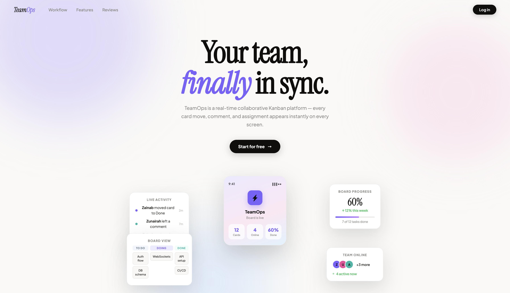
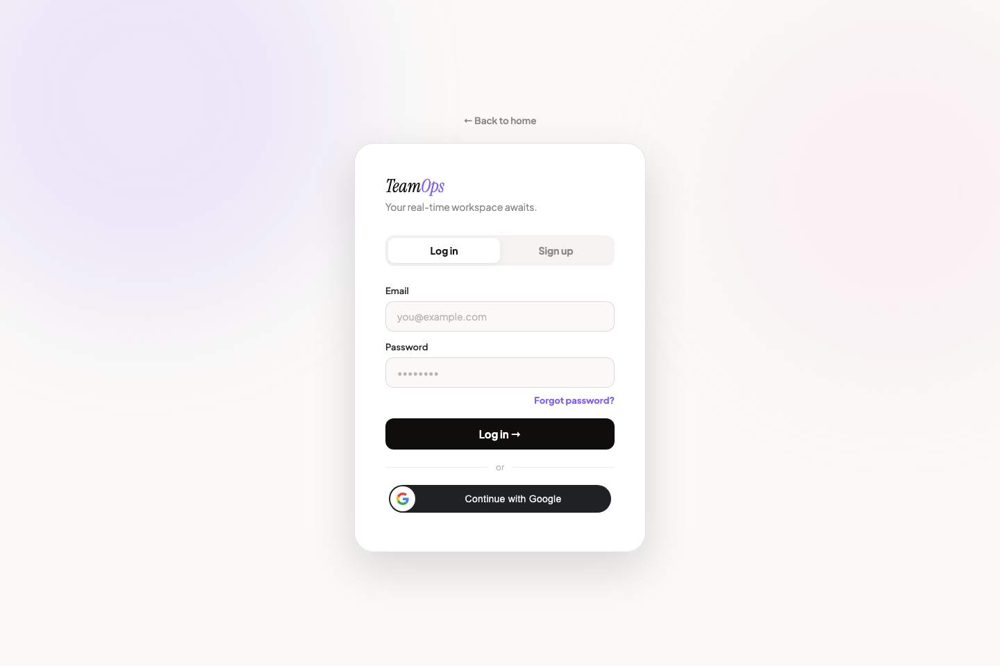
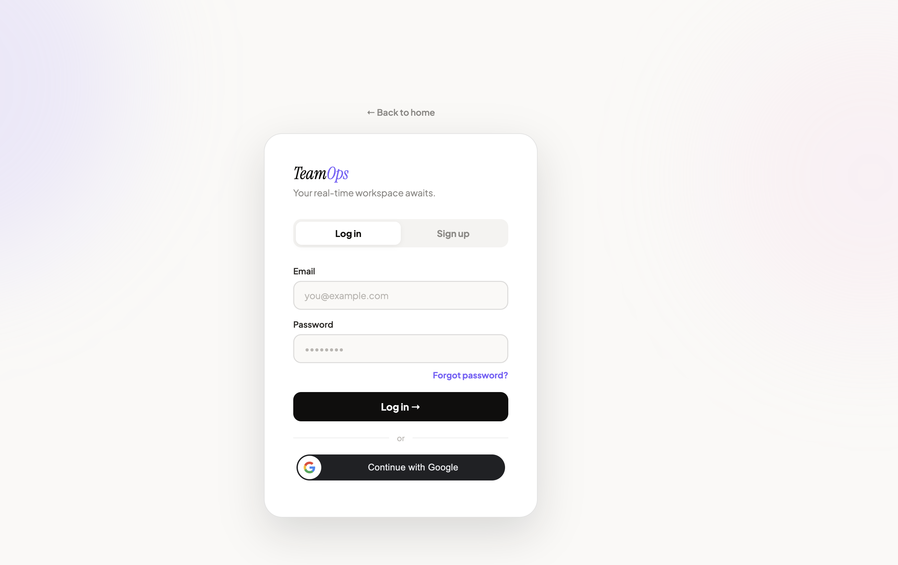
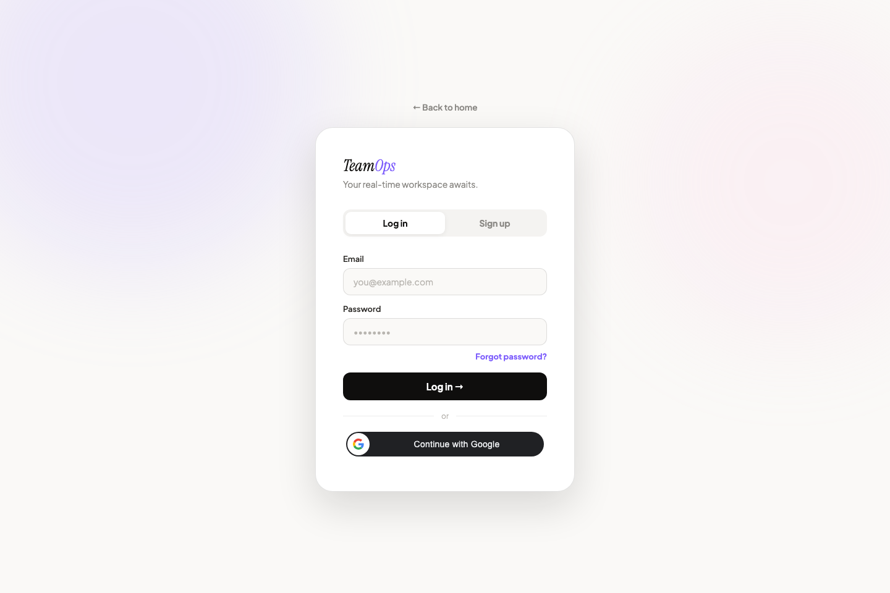
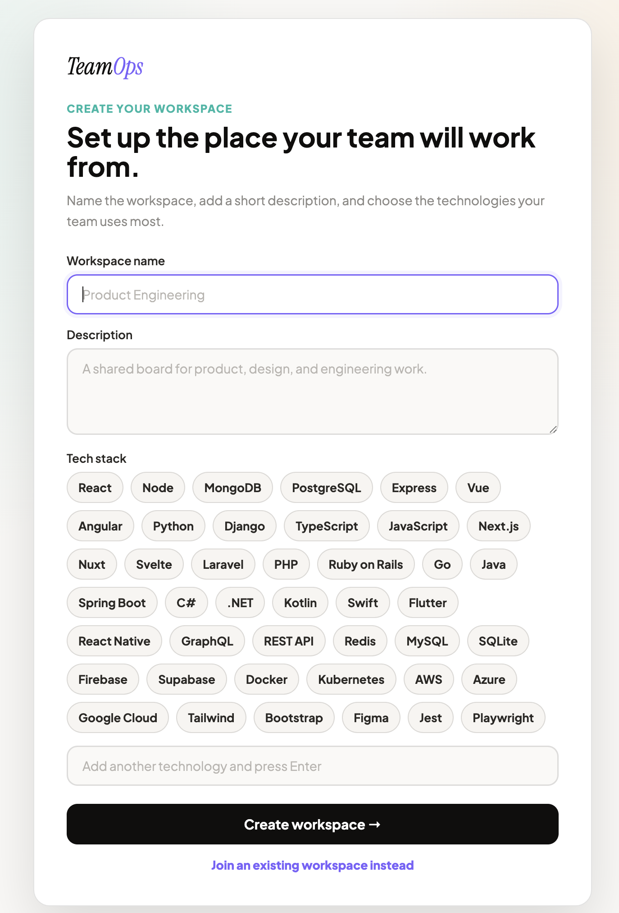
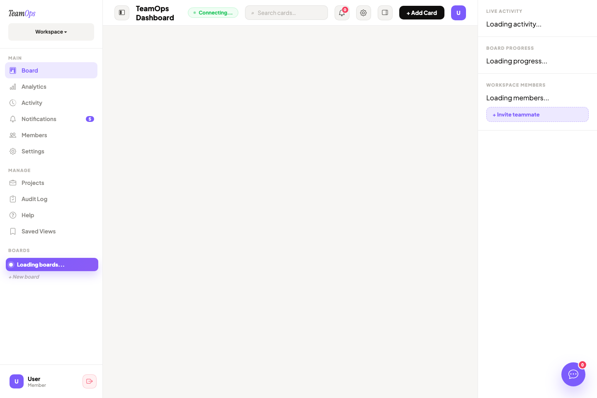
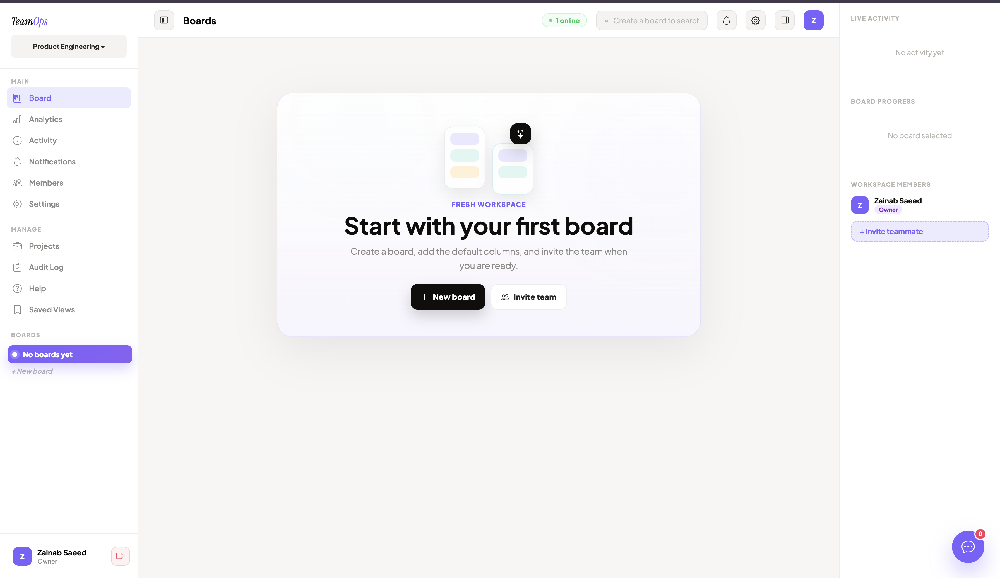
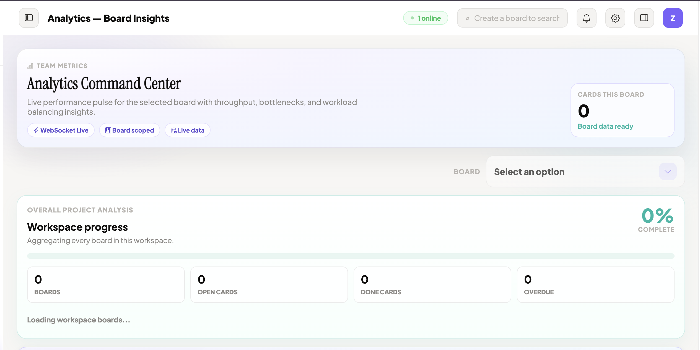
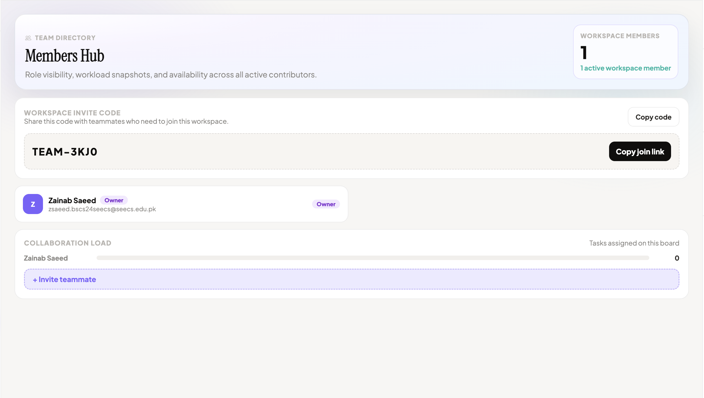
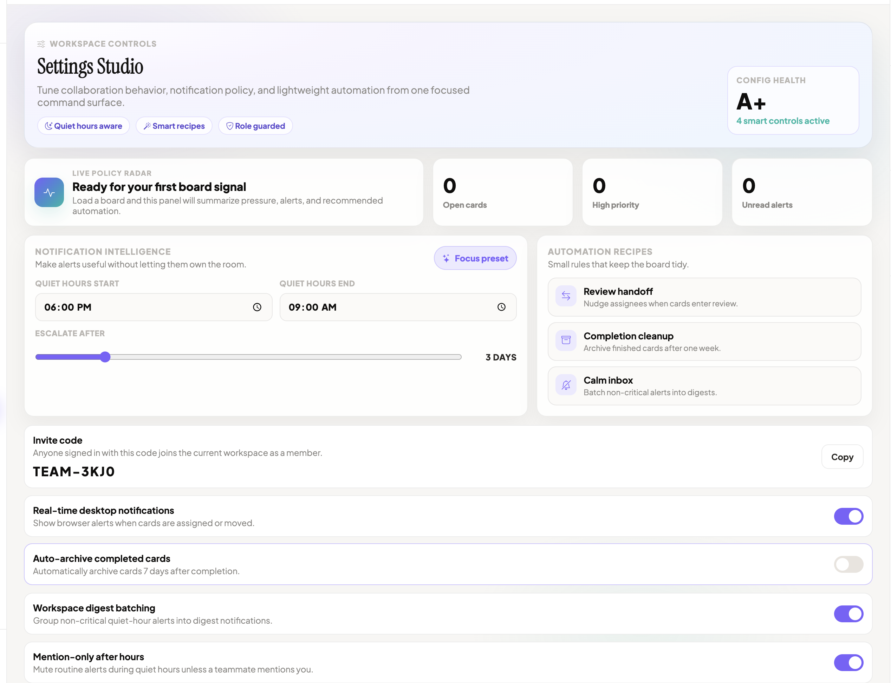
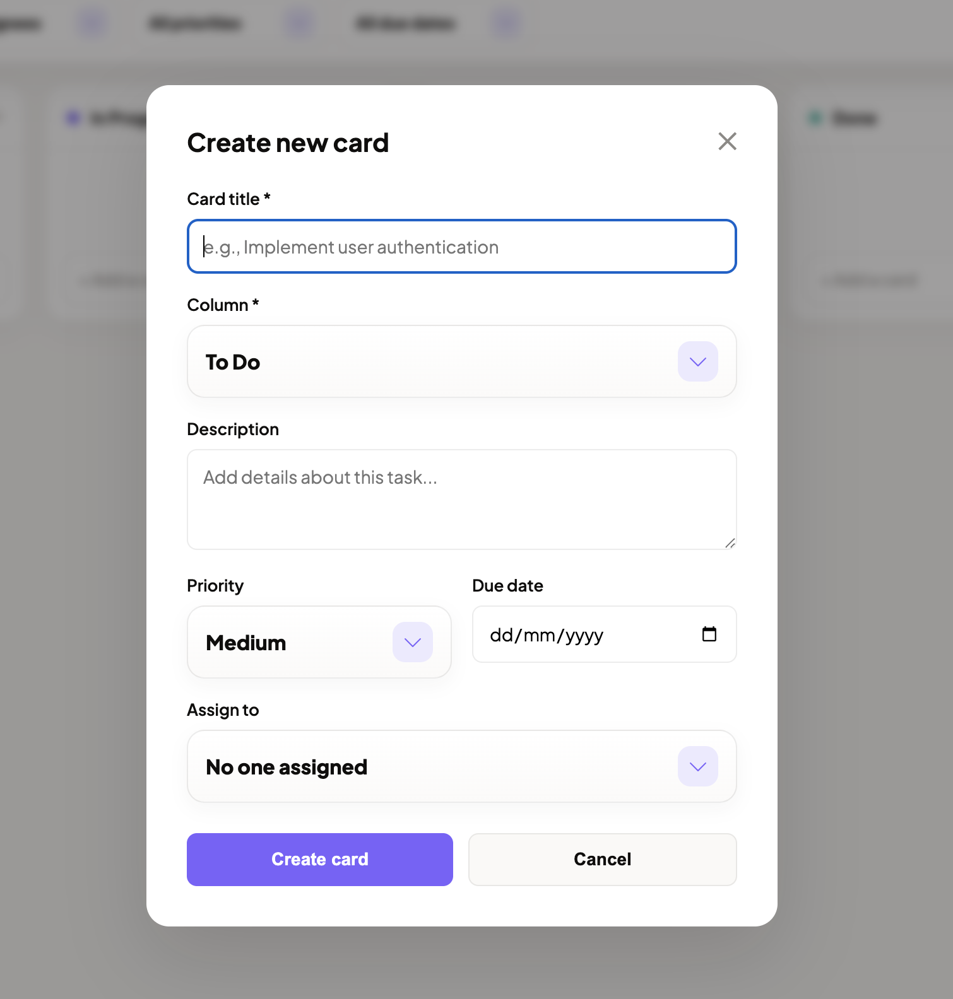
Users can create workspaces with a name, description, and tech stack. Each workspace has an owner and an invite code. Workspaces contain members with roles. Owners/admins can invite users, update roles, and remove eligible members. The system also supports joining through an invite code and joining through a secure email invite token.
Each workspace can contain boards, but a newly created workspace
starts empty so the user can decide whether to create a board or join an
existing workspace. Owners and admins can create, update, and delete
boards and columns. When a board is created, the backend adds the
default workflow columns: To Do, In Progress,
In Review, and Done.
Cards represent tasks. A card stores:
Members and above can create, update, delete, and move cards. The backend validates that a card belongs to the correct board before allowing updates. When a card is assigned to another user, the system creates a notification for that user.
The frontend uses HTML drag-and-drop events. When a card is dropped into another column, the frontend calls:
PATCH /api/boards/:boardId/cards/:cardId/moveThe backend validates access, verifies source and destination
columns, recalculates positions, saves the card, creates an activity
entry, notifies the assignee if required, and emits
card:moved to the board room.
TeamOps supports:
Tagged members receive important notifications. The backend normalizes tagged ids to ensure that only cards from the current board and members from the current workspace can be referenced.
Every important action can create an activity record. The project separates normal collaboration activity from governance-sensitive activity. Governance-related events include workspace, invite, member, role, permission, login, password, profile, account, security, and deletion events. Owners and admins can view broader audit logs, while members/viewers see limited events.
Notifications are created for assignments, mentions, moved assigned cards, and other important events. The inbox supports:
notification:new deliveryThe board analytics endpoint calculates:
This gives the dashboard measurable project status without requiring a separate analytics database.
The dashboard has grown into a complete workspace command center. In addition to the live board, it includes pages for projects, roadmap, integrations, communication channels, help, saved views, members, settings, profile, notifications, activity, analytics, and audit logs. Saved views allow a user to preserve useful board filters locally so repeated workflows can be reopened quickly.
Owners and admins can adjust workspace automation settings such as
desktop notification preferences, review nudges, escalation days, weekly
digest behavior, after-hours mention filtering, and completed-card
cleanup. The backend normalizes these settings, persists them on the
workspace, runs supported automation actions, and emits
workspace:settings so connected clients can refresh the
visible settings state.
Users can view and update profile details, upload an avatar, change password, and see cards assigned to them across accessible boards. This makes the app useful from both manager and individual contributor perspectives.
The backend signs tokens using:
payload: { userId }
expiry: 7 days
secret: JWT_SECRETThe JWT is stored in the teamops_session HTTP-only
cookie. Every protected route requires that cookie. The middleware
verifies the token and sets req.userId. For unsafe methods
such as POST, PATCH, and DELETE, authenticated requests also include the
X-CSRF-Token header matching the readable
teamops_csrf cookie.
For a request involving a board, column, or card, the backend
resolves the workspace id. Then it checks whether the current user is
present in workspace.members and has the required role.
When a card moves:
The backend prevents active cards from being assigned a due date in
the past. A past due date is allowed if the card is already in a
Done column, or when preserving an existing historical
date. This avoids accidental invalid scheduling while still allowing
completed historical work.
Activity filtering uses a governance pattern. Owners/admins can see governance events. Members/viewers only see governance events they personally caused, while normal board collaboration remains visible.
| Area | Current Implementation |
|---|---|
| Password storage | bcrypt hashing, no plain password storage |
| Session auth | JWT stored in HTTP-only cookie with server-side verification |
| CSRF protection | Double-submit CSRF cookie/header for unsafe authenticated requests |
| Email verification | OTP stored with expiry |
| Password reset | OTP reset code with expiry |
| Google login | Google ID token verification |
| Authorization | Workspace role checks in middleware and controllers |
| Input validation | Required fields, trimmed values, role validation, date validation |
| CORS | Configurable origin allowlist with local dev support |
| Data scoping | Board/column/card operations verify workspace membership |
| Realtime privacy | Socket.io reads the session cookie and user notifications emit to
user:<userId> room |
Potential improvements:
JWT_SECRET in all environments.The repository does not include a formal automated test suite, but it includes useful verification commands:
Backend:
cd teamops-backend
npm testThe backend test script currently runs
node --check server.js, which verifies JavaScript syntax
for the entry file.
Frontend:
cd teamops-frontend
npm run lint
npm run buildThe frontend test script runs lint and build. Because
the active app is standalone HTML/JS, manual testing is still
important.
TeamOps successfully demonstrates a full-stack real-time collaboration platform. It combines authentication, authorization, database design, REST APIs, WebSocket events, frontend state rendering, Kanban workflows, notifications, activity logging, and analytics in one coherent project. The most important technical achievement is that the app is not just a static dashboard: actions on boards are persisted in MongoDB, scoped by workspace permissions, logged as activities, and broadcast to connected users through Socket.io.
The project is suitable for a project submission because it covers core software engineering topics: requirements analysis, system architecture, schema design, API design, security, real-time communication, UI implementation, testing strategy, and future work.
| Method | Endpoint | Purpose |
|---|---|---|
| POST | /api/auth/register |
Register new user |
| POST | /api/auth/verify |
Verify email OTP |
| POST | /api/auth/login |
Login with email/password |
| POST | /api/auth/google |
Login using Google credential |
| POST | /api/auth/forgot-password |
Start reset flow |
| POST | /api/auth/reset-password |
Reset password using OTP |
| POST | /api/auth/logout |
Clear session and CSRF cookies |
| GET | /api/workspaces |
List user’s workspaces |
| POST | /api/workspaces |
Create workspace |
| POST | /api/workspaces/join |
Join workspace using invite code |
| GET | /api/workspaces/join/invite |
Accept secure email invite token |
| GET | /api/workspaces/:workspaceId/boards |
List boards in workspace |
| POST | /api/workspaces/:workspaceId/boards |
Create board |
| POST | /api/workspaces/:workspaceId/invite-email |
Send workspace email invite |
| GET | /api/workspaces/:workspaceId/automation-settings |
Load workspace automation settings |
| PATCH | /api/workspaces/:workspaceId/automation-settings |
Update workspace automation settings |
| GET | /api/boards/:boardId |
Get board with columns/cards |
| GET | /api/boards/:boardId/analytics |
Get board analytics |
| POST | /api/boards/:boardId/cards |
Create card |
| PATCH | /api/boards/:boardId/cards/:cardId |
Update card |
| PATCH | /api/boards/:boardId/cards/:cardId/move |
Move card |
| DELETE | /api/boards/:boardId/cards/:cardId |
Delete card |
| GET | /api/activities/workspace/:workspaceId/audit |
Get admin audit log |
| GET | /api/notifications |
Notification inbox |
| GET | /api/user/profile |
User profile |
| PATCH | /api/user/profile |
Update profile |